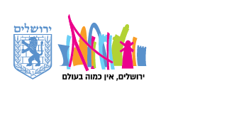
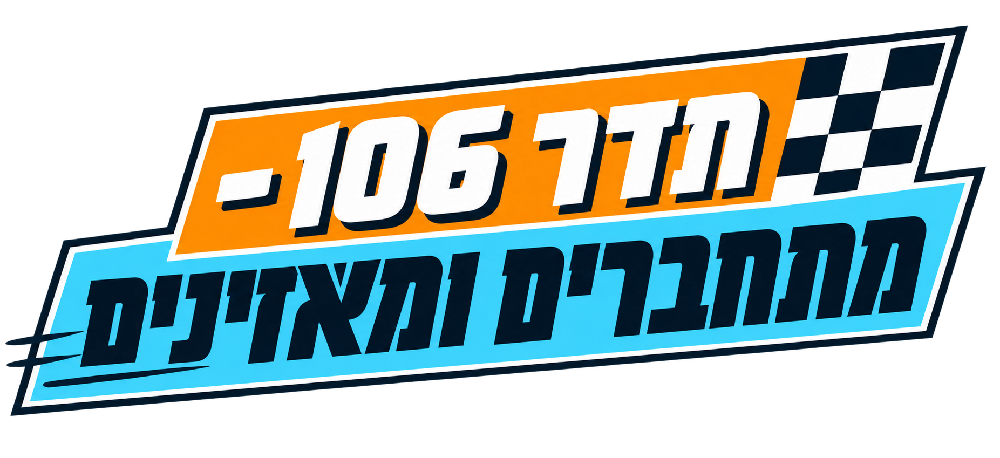
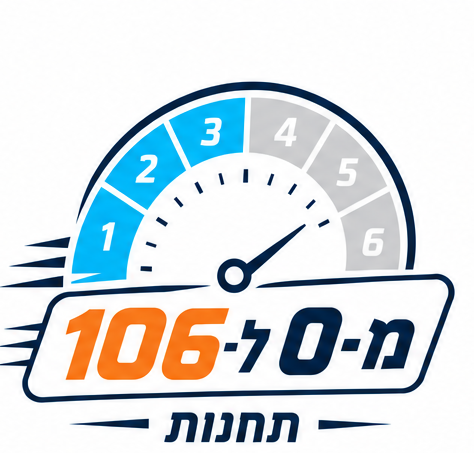
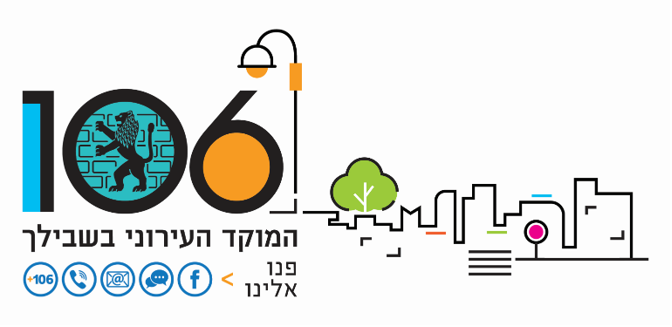
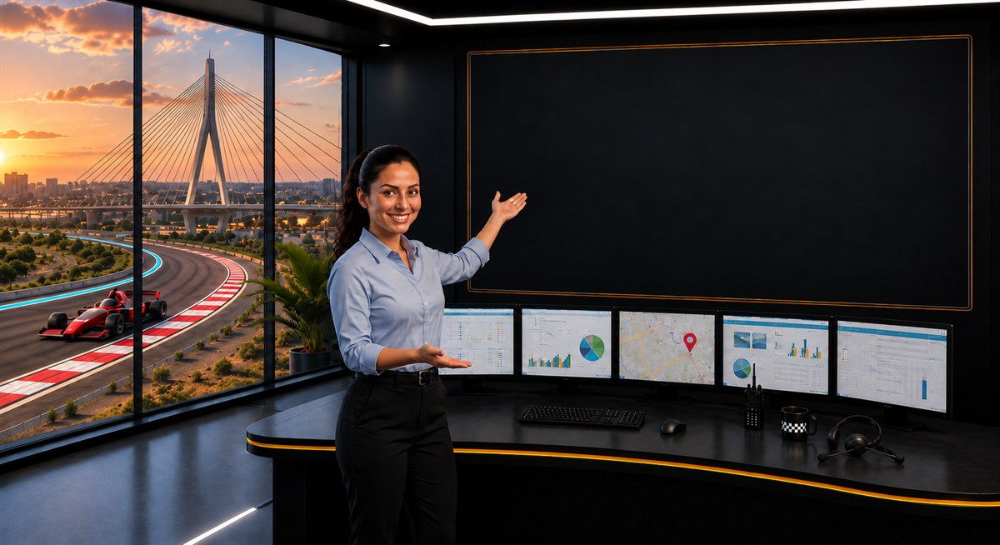
במוקד 106 הכול קורה בזמן אמת:
שיחות נכנסות, פניות נפתחות, מידע נבדק, מיקומים מתחדדים והטיפול עובר לגורמים בשטח.
כדי שהמשמרת תעבור חלק ושכל התקשורת עם הגורמים השונים תהיה רציפה, עלינו, הנציגים, להכיר איך נכנסים לכל מערכת, מתי משתמשים בה, למה היא חשובה, ואיך היא משתלבת בתהליך העבודה של המוקד.
ביחידת לימוד זו נתחבר לתדר 106:
התדר שמרכז את מערכות העבודה שילוו אתכם לאורך המשמרת.
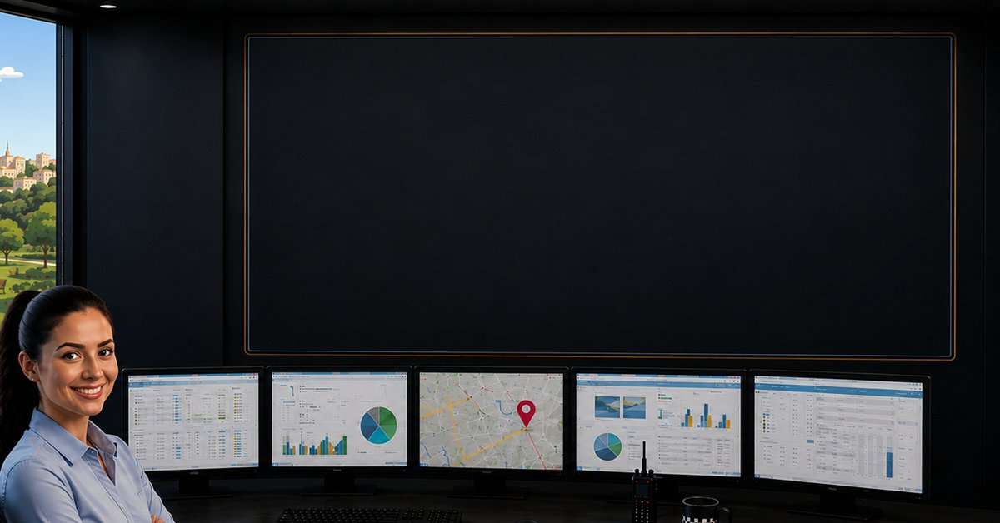
במהלך המשמרת נעזרים במערכות שונות, וכל אחת מהן מסייעת לנו בנקודה אחרת בטיפול בפנייה.
נכיר כל מערכת דרך הרגע שבו היא פוגשת אותנו בעבודה: נבין מתי משתמשים בה, איזה צורך היא עוזרת לפתור ואיך היא מסייעת לנו להתקדם בטיפול.
בכל מערכת נכיר את סביבת העבודה, נלמד איך מתמצאים בה ונתמקד בפעולות המרכזיות שחשוב להכיר כדי לעבוד בצורה יעילה ומדויקת.
הנחיות ניווט:
בכל פעם נפתח ערוץ אחד — עד שכל לוח הערוצים של המשמרת יהיה מכויל.
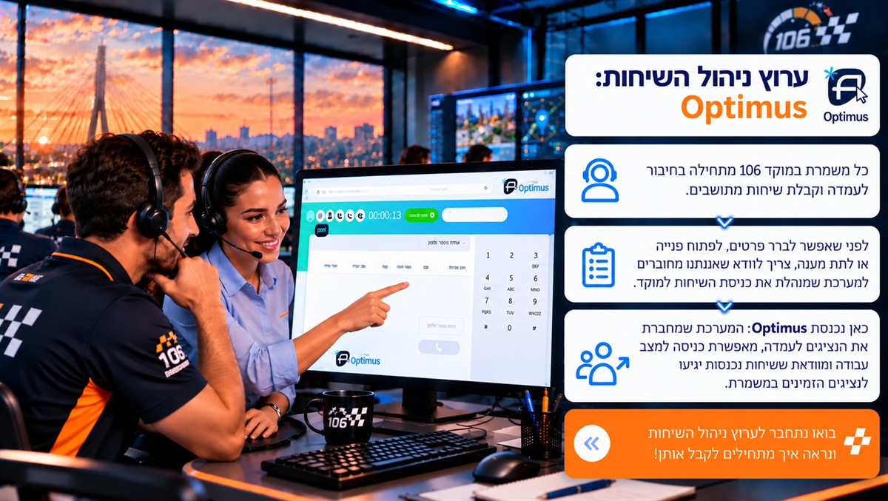
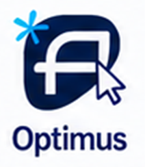
כל משמרת במוקד 106 מתחילה בחיבור לעמדה וקבלת שיחות מתושבים.
לפני שאפשר לברר פרטים, לפתוח פנייה או לתת מענה, צריך לוודא שאנחנו מחוברים למערכת שמנהלת את כניסת השיחות למוקד.
כאן נכנסת Optimus: המערכת שמחברת את הנציגים לעמדה, מאפשרת כניסה למצב עבודה ומוודאת ששיחות נכנסות יגיעו לנציגים הזמינים במשמרת.
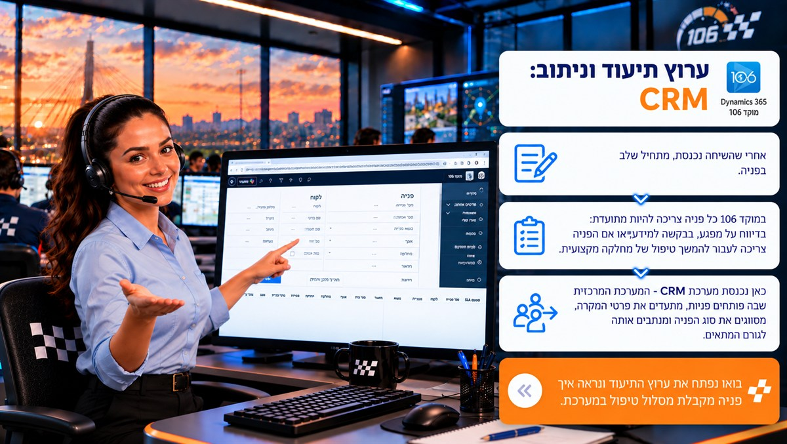
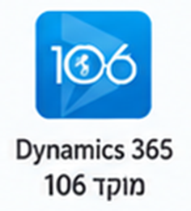
אחרי שהשיחה נכנסת, מתחיל שלב הטיפול בפנייה.
במוקד 106 כל פנייה צריכה להיות מתועדת: בדיווח על מפגע, בבקשה למידע, או אם הפנייה צריכה לעבור להמשך טיפול של מחלקה מקצועית.
כאן נכנסת מערכת CRM – המערכת המרכזית שבה פותחים פניות, מתעדים את פרטי המקרה, מסווגים את סוג הפנייה ומנתבים אותה לגורם המתאים.
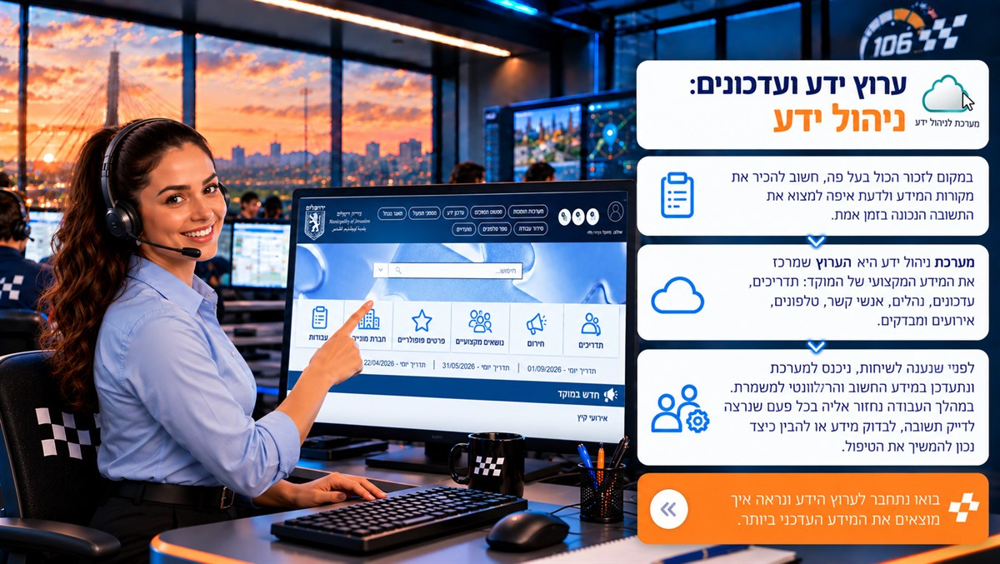
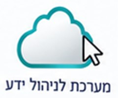
במקום לזכור הכול בעל פה, חשוב להכיר את מקורות המידע ולדעת איפה למצוא את התשובה הנכונה בזמן אמת.
מערכת ניהול ידע היא הערוץ שמרכז את המידע המקצועי של המוקד: תדריכים, עדכונים, נהלים, אנשי קשר, טלפונים, אירועים ומבדקים.
לפני שנענה לשיחות, ניכנס למערכת ונתעדכן במידע החשוב והרלוונטי למשמרת. במהלך העבודה נחזור אליה בכל פעם שנרצה לדייק תשובה, לבדוק מידע או להבין כיצד נכון להמשיך את הטיפול.
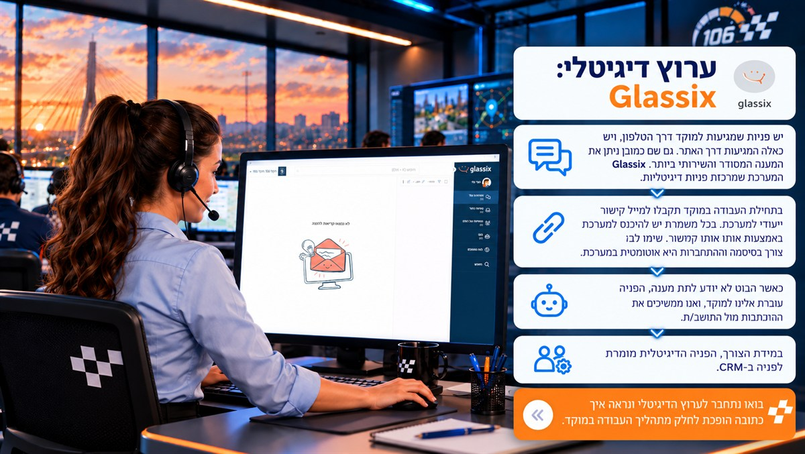
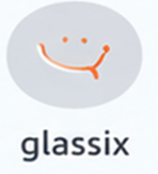
יש פניות שמגיעות למוקד דרך הטלפון, ויש כאלה המגיעות דרך האתר. גם שם כמובן ניתן את המענה המסודר והשירותי ביותר. Glassix היא המערכת שמרכזת פניות דיגיטליות.
בתחילת העבודה במוקד תקבלו למייל קישור ייעודי למערכת. בכל משמרת יש להיכנס למערכת באמצעות אותו קישור. שימו לב שאין צורך בסיסמה וההתחברות היא אוטומטית במערכת.
כאשר הבוט לא יודע לתת מענה, הפנייה עוברת אלינו למוקד, ואנו ממשיכים את ההתכתבות מול התושב/ת.
במידת הצורך, הפנייה הדיגיטלית מומרת לפנייה ב-CRM.
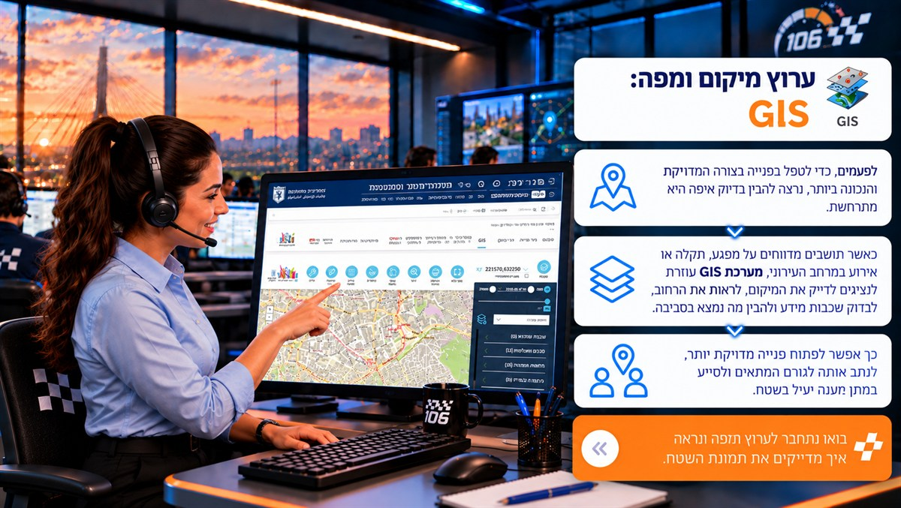
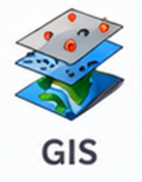
לפעמים, כדי לטפל בפנייה בצורה המדויקת והנכונה ביותר, נרצה להבין בדיוק איפה היא מתרחשת.
כאשר תושבים מדווחים על מפגע, תקלה או אירוע במרחב העירוני, מערכת GIS עוזרת לנציגים לדייק את המיקום, לראות את הרחוב, לבדוק שכבות מידע ולהבין מה נמצא בסביבה.
כך אפשר לפתוח פנייה מדויקת יותר, לנתב אותה לגורם המתאים ולסייע במתן מענה יעיל בשטח.
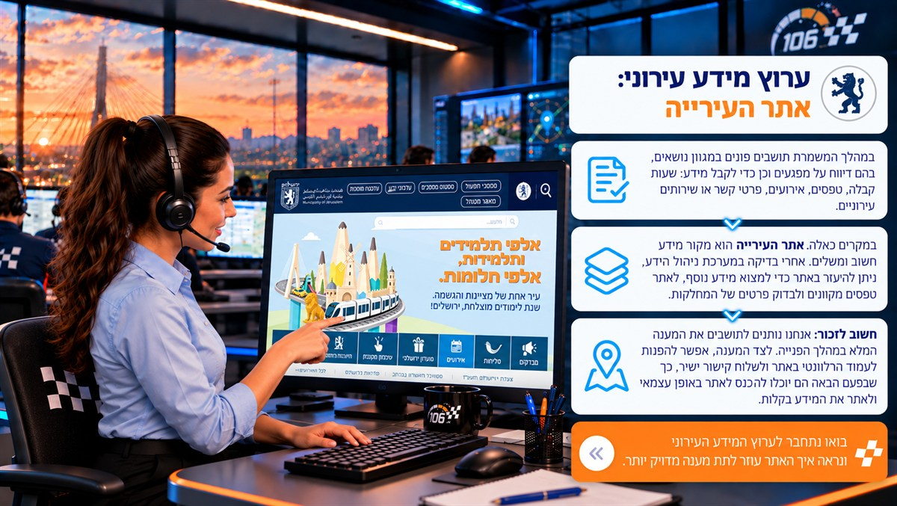
במהלך המשמרת תושבים פונים במגוון נושאים, בהם דיווח על מפגעים וכן כדי לקבל מידע: שעות קבלה, טפסים, אירועים, פרטי קשר או שירותים עירוניים.
במקרים כאלה אתר העירייה הוא מקור מידע חשוב ומשלים. אחרי בדיקה במערכת ניהול הידע, ניתן להיעזר באתר כדי למצוא מידע נוסף, לאתר טפסים מקוונים ולבדוק פרטים של המחלקות.
חשוב לזכור: אנחנו נותנים לתושבים את המענה המלא במהלך הפנייה. לצד המענה, אפשר להפנות לעמוד הרלוונטי באתר ולשלוח קישור ישיר, כך שבפעם הבאה הם יוכלו להיכנס לאתר באופן עצמאי ולאתר את המידע בקלות.
בתדר 106 הכרנו את מערכות העבודה המרכזיות שמלוות את נציגי המוקד לאורך המשמרת.
כל מערכת היא ערוץ אחר בתמונת העבודה של המוקד, וכשהערוצים פתוחים — קל יותר להבין מה קורה, לבחור את הפעולה הנכונה ולהוביל את הפנייה להמשך טיפול מדויק ועד לקו הסיום.
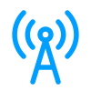
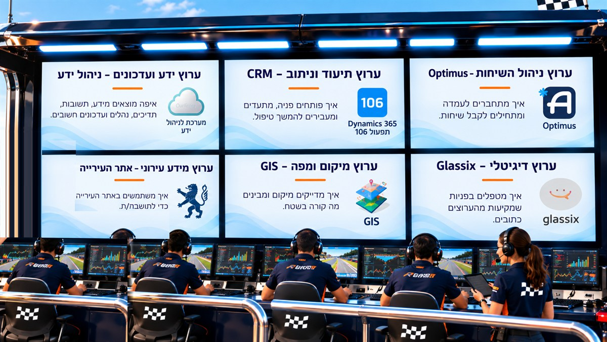